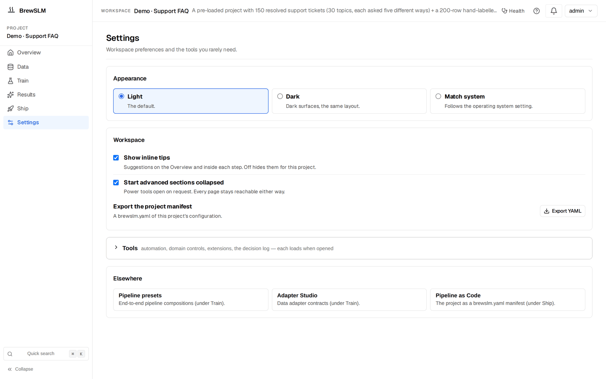
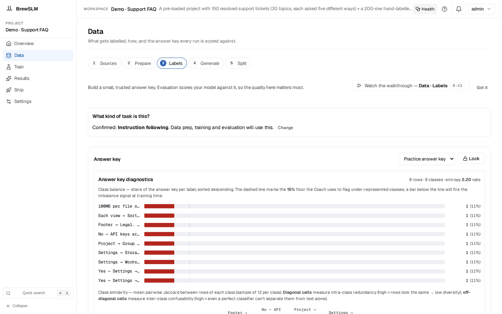

Build a legal-contract QA assistant with a custom domain pack
By the end of this tutorial you'll have a small language model that answers questions about clauses inside a body of commercial contracts, cites the clause it pulled, and refuses cleanly with the canonical refusal plus a legal-appropriate sentence ("I don't have enough context to answer that. I can't provide legal advice; consult counsel.") when context is insufficient. The interesting part is not the model — it's the custom legal domain pack that overlays the platform defaults with tighter registry gates (its hooks stay on the platform defaults until you ship a legal-text plugin). You'll build that pack from scratch, because BrewSLM doesn't ship a legal one.
Before you start
This tutorial assumes BrewSLM is running locally at http://localhost:5173 with an admin user signed in. If you haven't done that yet, complete Tutorial 0 — Set up BrewSLM and your first project first. Training needs Redis and a running Celery worker; Tutorial 0 starts both.
This tutorial is the natural follow-up to Tutorial 1 — Support FAQ with rag-protocol. T1 walks the rag-protocol recipe with platform defaults; T8 walks the same recipe with a custom domain pack on top. You can follow this one cold — the recipe is reintroduced — but the focus is the pack layer.
You'll want ~80 (clause, question, answer-with-citation) triples from public corpora (CUAD is easiest) or your own contract archive.
Terms you'll see in this tutorial (click to expand)
- Recipe
- The training-plan template. BrewSLM proposes one from your brief and your data; change it under Train → Task → Change. For this tutorial:
rag-protocol. Defines base model + adapter + a suggested eval pack (the pass/fail rule set in the BrewSLM UI), which only shapes the scaffold draft; it is not applied until you click Use scaffold. - Domain pack
- A typed configuration bundle that overlays defaults on top of the recipe — dataset split, training defaults, registry gates, plus hook references (normalizer / validator / evaluator). The platform seeds one default pack (
general-pack-v1); vertical packs are user-built. - Overlay
- The fields inside a pack contract that override platform defaults:
dataset_split,training_defaults,registry_gates. Resolved live: every split, training run and promotion reads the assigned pack's current overlay. - Registry gates
- The thresholds the pack imposes for promotion from training to staging or staging to production (minimums on metrics the project's eval produces, such as F1, and a max regression vs prod; a gate on a metric the eval never produces fails as
missing_metric). Independent of the eval pack but stack with it. - Eval pack
- The pass/fail rules your trained model is scored against — shown as the project's rule set on Results → Verdict (picked on Results → Failures). For rag-protocol you want
evalpack.rag_protocol.discipline(picking the recipe doesn't select it; you pick it in the Project rule set picker) — four required gates (citation rate ≥ 0.75, hallucination rate ≤ 0.15, appropriate refusal rate ≥ 0.80, F1 ≥ 0.55) plus two optional ones. - Adapter
- The mapping layer that converts your rows into training-ready fields. For rag-protocol the adapter is
rag-grounded— it reads (context, question, answer) triples. - Citation marker
- The
[#1]token in an answer that points at the source clause. The training signal the model imprints from gold + synth. - Canonical refusal phrase
- The recognisable refusal shape: "I don't have enough context to answer that." The eval and the refusals playbook only recognise a refusal that contains one of a fixed set of fragments built around it, so for legal we keep it and append a legal sentence (not via the pack — see the synth section).
Legal QA is the vertical where the recipe-and-pack split earns its keep. The recipe (rag-protocol) handles the protocol-level discipline every legal QA system needs — cite the clause, refuse cleanly, hold format. The domain pack carries the legal-specific overlays compliance will insist on — tighter registry gates today, and a hook slot for legal-text normalisation once you write that plugin. Derive those conventions once, store them in a typed contract, assign it to the project. The end state is a contract-clause QA model that runs entirely on the legal team's own hardware (privileged material doesn't leave the VPC), pulls the right clause from a 200-page agreement, and refuses with "consult counsel" rather than extemporise legal advice.
What you'll build
A contract-clause QA assistant with tighter-than-default citation discipline. Concretely:
- "What is the limitation of liability cap under the MSA?" → "The MSA caps each party's aggregate liability at twelve months of fees paid under the agreement, except for breaches of confidentiality or indemnification obligations
[#1]." - "Can my counterparty assign this contract to a competitor?" (clause does not address competitor restrictions) → "I don't have enough context to answer that. I can't provide legal advice; consult counsel. The retrieved clause governs assignment generally but does not explicitly address assignment to competitors."
- "What's the change-of-control termination notice period?" → "Either party may terminate within sixty (60) days of a change of control by delivering written notice
[#1]."
The model is a fine-tuned LoRA adapter on top of SmolLM2-135M-Instruct, answering well within a second on a single GPU (a rough guide; measure on your hardware), with retrieval over your archive in front of it. Inference is entirely on your hardware — contracts never leave the network.
Key idea
The rag-protocol recipe trains the protocol; the legal pack tightens the registry gates (its hooks stay on the defaults for now). Same trained adapter could in principle work for employment law, IP licensing, or M&A — different pack and different retrieval index per vertical, treated as siblings of the same recipe family.
Why a small model + custom pack (not regex, not a frontier API, not qa-sft)
- Regex / template extractors
- Lawyers don't write template English. "Notwithstanding the foregoing", "subject to Section 7.2", "in no event shall either party be liable for…" — paraphrased across firms, jurisdictions, and decades of drafting fashion. Regex catches structurally familiar clauses; it misses everything else. Useful as a coarse pre-filter, not the QA engine.
- Frontier LLM via API
- Quality is good; architecture is not. Contracts are privileged material; many carry NDA restrictions that prohibit sending text to third-party APIs at all. Per-call cost compounds fast in legal volumes (an M&A diligence run is tens of thousands of clauses). You're also importing a foreign jurisdiction's data-residency assumptions into your compliance posture.
- qa-sft (memorise the answers in weights)
- Wrong recipe. Legal facts change with jurisdiction, statutory amendments, and contract version. A model that memorised the cap in the v3 MSA will confidently quote that number after v4 renegotiated it. Quarterly retrains, with the model still silent about which version it learned from.
- rag-protocol + custom legal pack (this tutorial)
- The protocol stays the same regardless of which contract is being asked about. Facts live in the BM25 index over your archive — refresh on every new contract, no retrain. The pack carries tighter registry gates; its hooks stay on the defaults until you ship a legal-text normaliser. The model hosts on the legal team's own machines. Audit trails fall out: every answer cites a clause, every refusal cites the same phrase, every retrieval is loggable.
Choose your dataset
You need (clause, question, answer-with-citation) triples — same shape as T1, but the "context" is a contract clause. Four sources:
- CUAD — the canonical legal-NLP spine
- Contract Understanding Atticus Dataset (CUAD) ships 510 commercial contracts labelled across 41 clause categories by law students and checked by experienced attorneys (CC BY 4.0) — change-of-control, governing law, indemnification, limitation of liability, IP assignment, non-compete. Annotations are spans-with-types; template them into question/answer pairs. 80-150 templated rows is a healthy gold-set spine.
- LexGLUE — the multi-task legal benchmark
- LexGLUE packages seven legal-NLP sub-tasks across multiple jurisdictions. Good warm-up exposure to legal-text shapes; don't ship it as gold (task framing too varied).
- ContractNLI
- NLI-style annotations over contracts: clauses paired with hypotheses labelled Entailment / Contradiction / NotMentioned. The shape isn't directly QA, but NotMentioned rows are natural seeds for refusal rows.
- Your in-house contract archive (production data)
- Pair your team's standing interpretive notes with the clauses they reference. This is the dataset that matters at deployment — your drafting conventions, your customer base, your jurisdiction. Most in-house archives carry NDA-style restrictions and some text may be attorney-client-privileged.
Privilege is not a stylistic concern
If any data touches attorney-client privileged material, remember that the synthetic playbooks send rows to whichever data-writer backend you pick: a local model through Ollama, or a cloud provider / OpenAI-compatible endpoint. The local path is fine; third-party APIs are not. Pick the local backend before running synth over anything privileged. If unsure whether a contract is privileged, treat it as if it is.
Ingest and map
Create a new project: Projects → + New Project, then pick the rag-protocol recipe under Train → Task → Change. The recipe pre-fills the adapter (rag-grounded), task profile (rag_qa) and scoring mode (field_match). It does not switch the rule set Results scores against; you pick that yourself in the Evaluation section. The project gets the platform's default pack (general-pack-v1) unless you pick another under Advanced options; we'll swap it for our custom legal pack in the next section.
Then Data → Sources → Import dataset (auto-mapping) → Import dataset →. Point the wizard at your JSONL. Its Map step proposes:
{
"context": "Notwithstanding any other provision of this Agreement, in no event shall either party's aggregate liability under this Agreement exceed an amount equal to twelve (12) months of fees paid by Customer hereunder, except for liability arising from a party's breach of its confidentiality obligations under Section 8 or its indemnification obligations under Section 11.",
"question": "What is the limitation of liability cap under this Agreement?",
"answer": "The Agreement caps each party's aggregate liability at twelve (12) months of fees paid by Customer, except for breaches of the confidentiality obligations (Section 8) or indemnification obligations (Section 11) [#1]."
}The wizard shows a confidence-scored preview of rows mapped through the adapter. Preview & Confirm → Import N row(s) to project when it looks right. Imported rows are accepted straight into training (they skip the review queue), so this preview is your review.
✓ Checkpoint: the Readiness overview (Data → Sources → Details) now shows your imported row count. It has no per-category breakdown; to see which clause categories are thin, use the coverage view in Data → Labels → Details → Answer-key workbench once the answer key exists.
Cleanup for legal text
Open Data → Prepare → Details → Quality and safety. Legal-text cleanup is different from a support FAQ — the noise is different and the things to preserve are different:
- Jurisdictional citations stay, footnote markers go. "Subject to 29 U.S.C. § 158" — preserve the statutory citation verbatim. "[3]", "†", "1" footnote markers must be stripped before they collide with your
[#N]citation marker; leave them in and the model learns "[3]" is a valid citation shape, and downstream consumers can't tell real citations from leftover footnotes. - Contract clause numbering normalised, not stripped. "Section 7.2(a)(iii)" inside an answer is signal — the model is pointing the human at a precise sub-clause. Normalise format (Roman vs Arabic, parens vs brackets) so the model sees one shape.
- Signatory names are PII. Quality and safety surfaces them. Redact or replace with role descriptors ("Customer", "Provider", "Licensor"). The platform won't auto-redact; review each explicitly.
- Unicode normalisation. Legal text loves smart quotes, em-dashes, non-breaking spaces in section references, and full-width punctuation from PDF extractors. Normalise to NFC.
- Near-duplicate clauses. Many MSAs use near-identical limitation-of-liability language. Quality and safety flags near-dupes; keep one canonical version per cluster — near-dupes bleed train/test signal and inflate F1.
Clean the rows you're about to promote to the answer key — those are the ones the pass/fail rules score against and that synth seeds from. A 30-minute pass over the first 50 candidates buys weeks of debugging time later.
Pick the recipe: rag-protocol or qa-sft?
BrewSLM ships two recipes that could plausibly do legal QA. Use this decision tree:
| Question | rag-protocol | qa-sft |
|---|---|---|
| Contracts amend, statutes change, new jurisdictions arrive? | ✓ (index lives outside weights; re-ingest, not retrain) | ✗ (every amendment is a re-training) |
| Need an explicit citation in every answer for audit? | ✓ (recipe imprints the [#N] marker) | ✗ (no citation discipline) |
| Need a recognisable refusal phrase compliance can detect? | ✓ (recipe imprints a canonical refusal) | ✗ (model will guess freely) |
| Many contracts, same shape (MSA, NDA, SOW)? | ✓ (one model, swap indexes per matter) | ✗ (one model per corpus) |
| Tiny static body of clauses you'll never amend? | (over-engineering) | ✓ (memorisation works) |
For any legal QA where the corpus is non-trivial and the facts change — which is essentially all production legal QA — rag-protocol wins. Per-amendment retraining is a non-starter in a regulated environment; the audit team wants to see a citation in the answer, not a "trust me" from the model. Sticking with rag-protocol for the rest of this tutorial.
Build a custom legal domain pack
This is the section that distinguishes this tutorial from T1. T1 walks the recipe with platform defaults; T8 walks the same recipe with a custom pack overlaying the defaults.
What a domain pack is (and isn't)
A domain pack is a typed configuration bundle persisted as a JSON contract against the slm.domain-pack/v1 schema. It carries identity fields (pack_id, version, display_name, owner, status), a default_profile_id pointing at a domain profile, three hook references (normalizer, validator, evaluator) picked from the platform's plugin catalog, and an overlay block with three keys: dataset_split, training_defaults, and registry_gates. Assigning a pack only stores its id on the project; the overlay is resolved live, every time a split, a training run or a promotion reads the project's domain settings.
Three things a domain pack is not:
- Not a snapshot. Because the overlay is resolved live, Save Pack on an assigned pack changes every project assigned to it on its next split, train or promote. That matters for audit: to change one project without touching the others, Duplicate + Open Editor first (a new version), edit the copy, and assign it to that project.
- Not a modifier of playbook prompts. Playbook prompts and the refusal phrase are fixed in the platform; neither the pack nor any per-project setting rewrites them — see the synthetic section.
- Not an eval-pack editor. Eval packs and domain packs are siblings: eval packs gate the trained model; domain packs gate the dataset / training / registry transitions. To tighten eval thresholds, edit the scaffolded rule set on Results → Failures and click Use scaffold (see the Evaluation section).
What the platform ships today
Out of the box, BrewSLM seeds exactly one domain pack: general-pack-v1, a safe-baseline fallback. There is no legal, healthcare, or support pack pre-installed. Vertical packs are user-built; that's the gap this tutorial closes.
Build the legal pack under Settings → Tools
Open Settings → Tools → Domain Packs (the section loads when you expand it). The Domain Pack panel shows the active pack, a dropdown of installed packs, the hook catalog, and an editor with a Hook Picker and the contract JSON. To create a legal pack:

- Click New Pack. The editor populates with a template. Drop in your identity fields:
{ "$schema": "slm.domain-pack/v1", "pack_id": "legal-contracts-v1", "version": "1.0.0", "display_name": "Legal Contracts", "description": "Overlay for commercial-contract QA: tightened registry gates, default-hook plumbing, intended for the rag-protocol recipe.", "owner": "legal-eng", "status": "active", "default_profile_id": "generic-domain-v1", "tags": ["legal", "contracts", "rag-protocol"] } - Pick your hooks in the editor's Hook Picker. Three selectors — normalizer, validator, evaluator — populated from the installed plugin catalog; a change writes straight into the contract JSON. For a starter pack, leave the defaults (
default-normalizer,default-validator,default-evaluator). Ship a customlegal-normalizerplugin later (jurisdictional-citation regex, footnote-marker stripping, signatory-redaction primitives) and re-point the pack at it. - Tighten the registry gates. Edit the overlay JSON:
Vs the platform default (staging F1 0.65, production F1 0.70, regression cap 0.03), the legal pack tightens every gate. The gates name only"overlay": { "dataset_split": { "train": 0.8, "val": 0.1, "test": 0.1, "seed": 42 }, "training_defaults": { "training_mode": "sft", "num_epochs": 3, "batch_size": 4, "learning_rate": 0.0002, "use_lora": true }, "registry_gates": { "to_staging": { "min_metrics": { "f1": 0.70 } }, "to_production": { "min_metrics": { "f1": 0.75 }, "max_regression_vs_prod": { "f1": 0.02, "exact_match": 0.02 } } } }f1andexact_matchbecause those are metrics a rag-protocol project's eval produces; a gate on a metric the project never produces (an LLM-judge or safety pass rate, say) fails promotion asmissing_metric. One note ontraining_defaults: the seededgeneral-pack-v1also setschat_template: "llama3", and this pack leaves it out on purpose. It is only a fallback preset: by default, question → answer rows train in the base model's own chat template (ChatML for SmolLM2-Instruct), and rag-protocol rows carry their handler's prompt. The Llama-3 preset would take over, in the wrong format for SmolLM2, only if that default were switched off (Tutorial 9, the overlay block). Promoting a regression — even small — into production legal-QA is exactly the decision an auditor will ask about; raising the bar at the pack layer puts it through review by default. - Save Pack. The panel validates against the
slm.domain-pack/v1schema. Common errors: typo'd hook IDs, missingdefault_profile_id, non-semverversion. - Assign to your project. Pick
legal-contracts-v1from the pack dropdown and click Assign to Project. The project now points at the legal pack instead of the general pack; its overlay applies from the next split, training run or promotion.
✓ Checkpoint: the Domain Packs section lists legal-contracts-v1 alongside the seeded general pack, and its Active panel names the new pack. (The goal ledger has no registry rows; registry gates act when you promote a model from the registered-models table on Ship → Package.) If the pack is listed but Active still shows the general pack, the assignment didn't land — re-pick from the dropdown.
What the pack does not override
Eval pack thresholds (citation rate, hallucination rate, refusal rate, F1) live in the eval pack — the project's pass/fail rule set — not the domain pack; see the Evaluation section. Synthetic-playbook prompts (including the refusal phrase) are fixed in the platform and outside the pack's scope. The pack handles training defaults, dataset-split, registry gates, and hook plumbing; eval thresholds and playbook prompts are separate concerns at separate layers.
Build the answer key
The answer key (BrewSLM's name for the gold set, under Data → Labels) carries the legal-specific behaviour the model inherits. Two complementary paths.

Path A — manual seeding from standing interpretations
Your legal team maintains "standing interpretations" of common clauses: how they read limitation-of-liability, how they evaluate change-of-control language, how they apply indemnification scopes. These are gold. Open Data → Labels (the answer-key card) and for each clause category:
- Paste the clause text into
contextverbatim. - Write the question a partner or in-house counsel would actually ask. "What is the limitation-of-liability cap, and does it carve out indemnification?" forces the model to find both pieces.
- Write the answer your team's standing interpretation gives, ending with the
[#1]citation marker. Use the contract's own section numbering inside the answer.
60-80 hand-seeded rows across the categories you'll see most (limitation-of-liability, indemnification, change-of-control, governing law, IP ownership, confidentiality, term and termination) anchors the model in your team's voice.
Path B — LLM-assisted expansion from CUAD
For broader training coverage, use CUAD-derived answer-key rows as seeds:
- Template CUAD clauses into (clause, question, answer) answer-key rows by hand, as in Path A.
- Open Data → Generate → Details → Playbooks and run Paraphrase positives. It rewrites the question of each answer-key row and keeps the clause and answer verbatim, expanding a small attorney-curated set into a richer training corpus. Use a local backend for anything privileged; CUAD itself is public.
- Every generated triple lands in the review queue (Data → Generate → Details → Review queue) as pending. Accepting a row makes it training data; it does not add to the answer key.
The data writer may mis-quote clause numbers, conflate "Customer" with "either party", and hallucinate cross-references — read every row before accepting.
✓ Checkpoint: the goal ledger's answer-key readiness row (gold_set, in Data → Sources → Details → Readiness overview) counts toward 100 rows (the recipe recommends at least 60), so partial progress is fine for now. Check the coverage view in the Answer-key workbench (Data → Labels → Details) and aim for no clause category under 8 rows. If one category (say "non-compete") is starving, hand-seed more before training.
Refusal examples carry the legal phrasing
Your answer key must contain rows where the right answer is a refusal ("I don't have enough context to answer that. I can't provide legal advice; consult counsel. The retrieved clause [does not address X / is silent on Y / is ambiguous on Z]."). Add 8-12 manually. Keep the canonical first sentence. The eval and the refusals playbook only recognise a refusal that contains one of a few fixed fragments (such as "don't have enough context"). A legal-only phrase would count as an answer: appropriate_refusal_rate goes blind, the refusal text inflates hallucination_rate, and every refusals-playbook row in that wording has its confidence multiplied by 0.30. The pack can't change that list; appending the legal sentence gets you both.
Splitting train, validation, test
BrewSLM splits when you click Run Split on Data → Split (the Prepare checklist in its Details drawer has Run prepare now too). Ratios come from the pack's dataset_split overlay (resolved live at split time) — 80/10/10 with seed 42 for our legal pack. The split is deterministic so the manifest hash is reproducible.
Override the ratios on the Split step when your answer key is under 80 rows (use 70/15/15 so val/test get at least 10), when one clause category is overrepresented (set Stratify By Field to the clause-category column), or when you want a strict held-out test set (bump test to 20%, score against val for iteration rounds).
Prepared splits land in data/projects/<id>/prepared/{train,val,test}.jsonl plus a manifest.json (snapshots under prepared/versions/), pinned with row counts and content hash. If anything drifts later, the goal ledger flags the version mismatch and offers a one-click re-prepare.
Generate synthetic drills
The rag-protocol recipe ships three playbooks (Paraphrase positives, Refusals, Format robustness). Their prompts are fixed; the legal flavour comes from your seed rows and your review, not from the pack:
- rag_protocol_paraphrase — citation-discipline drill
- Holds clause and answer constant; varies the question wording. "What's the LoL cap?", "How much can each party be liable for?", "Does the contract limit damages?" — same answer, same
[#1]citation. Generate ~50 rows. - rag_protocol_refusals — context-insufficient drill
- Questions the retrieved clause genuinely cannot answer, paired with the canonical refusal phrase. Two flavours: real context that is off-topic for the question (for example a clause about payment terms, a question about termination), and an empty or stub context the model must refuse on. Generate ~30 rows.
- rag_protocol_format — register-invariance drill
- Same question in different registers — partner-formal ("Could you indicate the limitation-of-liability cap, including any carve-outs?"), in-house terse ("LoL cap?"), client-informal ("how much can they sue us for"). Same clause, same answer, same citation. Generate ~30 rows.
Known gap: refusal wording is fixed
Per-pack refusal-phrase customisation would be a great fit for the domain pack — it is not implemented today. The refusals playbook's prompt and the refusal phrase list are fixed in the platform, and no synth config changes them. The playbook writes the canonical phrase; to add your legal sentence, edit generated rows before accepting them, keeping the canonical sentence first so the row still counts as a refusal. A configurable refusal-phrase list in the pack contract would be a natural future enhancement.
Open Data → Generate (the Playbooks and Playbook center sit in its Details drawer). Click each card, set target count, pick a backend (a local model for anything privileged; a cloud provider key or any OpenAI-compatible endpoint is fine for CUAD-seeded rows). Generation runs as a background Job; the bell tracks progress.
Review the synth queue
Every generated row lands in the Review queue (Data → Generate → Details) with review_status="pending", grouped by source playbook. Per-row inspection is slower for legal than for support FAQ — verify the citation points at the right sub-clause, the language doesn't soften a hard cap, the refusal keeps the canonical sentence plus your approved legal wording. Three per-row actions:
- Accept — the row joins training on the next split.
- Reject — soft-reject; the row stays on disk. You can't type a reason tag. To sort rows by legal failure (missing
[#N], wrong jurisdiction, over-claiming), run Pre-screen with those checks in its rubric; it attaches a verdict and reason to each row, and Group by → Verdict + reason lets you reject a whole group at once. - Purge — bulk-delete rejected rows, optionally only those with one pre-screen reason. Rejected rows are selectable and bulk-droppable; never an all-or-nothing call.
Per-row confidence shows too (nothing is highlighted; sort or scan for it). Under 50% usually means a playbook validator down-scored the row: a lost [#N] marker multiplies it by 0.45, a refusal without a recognised refusal fragment by 0.30. Hallucinated cross-references and invented section numbers don't lower it, so read those rows yourself.
Training configuration
Open Train — one form: base model, task, seeds, run name, then Train. The platform defaults plus the pack's training_defaults give you a sensible starting point (the hyperparameters sit under More options → Model and hyperparameters and LoRA and advanced training). The confirm dialog shows the resolved values before you launch; check them there.
- Base model
HuggingFaceTB/SmolLM2-135M-Instruct. Alternative:Qwen/Qwen2.5-0.5B-Instructfor clauses over ~400 tokens.- Adapter
- LoRA, rank 16, alpha 32, target modules
auto— every linear layer (all-linear) on models of 2B parameters or fewer. - Learning rate / epochs
- 2e-4, 3 epochs in the pack's
training_defaults. Without an epoch count the platform default is auto (about 200 optimiser steps, capped by dataset size); confirm in the dialog which one the run will use. The protocol is what's being learned, not the facts. - Batch + grad accumulation
- Batch 4, accumulation 4 configured; with auto epochs the trainer shrinks accumulation first on small datasets (a few hundred rows train at effective batch 4). Long clauses (300-500 tokens) push memory higher than support-FAQ; on 8 GB drop the batch to 2.
Training runs on the Celery worker, so Redis and the worker from Tutorial 0 must be up; without the worker the run reads RUNNING but never makes progress, and without Redis it is marked Failed at hand-off. Expected runtime (a rough guide, not a measured benchmark): minutes on a single GPU, longer on CPU. The runs list below the Train form shows live loss + sparkline; if loss isn't dropping after ~50 steps, cancel and check the data.
✓ Checkpoint: the run's row in the runs list shows a loss sparkline that drops steeply and then flattens (the exact values depend on your data and model); bell shows a "training" notification. When it completes, BrewSLM runs the lift check against the base model on its own and Results → Verdict shows the summary card (or Evaluate this run if the check didn't run).
Read the trainability forecast
Before training, the platform pre-computes a trainability forecast: given current data + gold + base model, what's the predicted pass rate against the pass/fail rules? The goal ledger (Data → Sources → Details → Readiness overview) shows it as the predicted_pass row; the forecast itself sits under Train → More options → Plan and gaps.
With a tightened rule set, predicted-pass can land lower than T1's would — the rules are stricter, harder to clear, intentionally. For a healthy legal project you want predicted pass ≥ 60% (T1's target was 65%), the answer-key row at 100 rows (more than the recipe's 60 minimum, because the clause vocabulary is wider than support FAQ), and data ready = met.
If the forecast is below 50%, training will fail the pass/fail rules. Add data before training — the blockers panel tells you which component is weakest and which clause category is starving.
Evaluation: tightened pass/fail rules (rule set)
Picking the rag-protocol recipe does not pick its rules: until you act, Results scores you against the domain profile's rule set (evalpack.domain-profile, from the project's profile; see the box above). The discipline rule set (evalpack.rag_protocol.discipline) gates four required behaviours: F1 ≥ 0.55, citation rate ≥ 0.75, hallucination rate ≤ 0.15, refusal rate ≥ 0.80; plus two optional (format consistency, safety pass rate). For legal, the citation and hallucination thresholds are too loose — every uncited answer is a potential malpractice exposure.
There is no registry for uploading a custom eval pack. The built-in packs can't be edited, so to tighten the rules you build them in the project's one editable rule set, the scaffold:
- Open the scaffold. After your first run, open Results → Failures with the run selected. In the Pass/fail rules card, leave Project rule set on Auto (domain profile fallback); the Scaffolded pass/fail rule set panel appears. For rag-protocol it starts from a generic instruction-tuning draft, not from the discipline rules.
- Rebuild the discipline rules, tightened. With + Add rule, add
citation_rate≥ 0.85 andhallucination_rate≤ 0.10, thenappropriate_refusal_rate≥ 0.80 and F1 ≥ 0.55; mark them required. The gate editor recommends these metrics for rag-protocol projects. - Click Use scaffold. It is saved as the project's rule set (
evalpack.project.scaffolded) and the next eval run scores against it.
If you only want the stock discipline thresholds, skip the scaffold and pick RAG Protocol — Discipline Gates (6 rules) in the Project rule set picker instead. Thresholds in a Domain Profile (Settings → Tools → Domain Profiles) are the other route to custom rules.
The goal ledger's eval_pass_rate row expands into a per-rule breakdown — "citation 0.82 / ≥ 0.85 FAILED, hallucination 0.08 / ≤ 0.10 passed, refusal 0.87 / ≥ 0.80 passed, F1 0.61 / ≥ 0.55 passed." That tells you which playbook to re-run. Remember that the citation rate is a grounding rate (token overlap with the clause); it never checks the [#N] marker.
When the eval fails
| Symptom | Root cause | Fix |
|---|---|---|
| Citation rate < 0.85 | Answers drift from the clause text (a grounding failure; the metric doesn't look at the marker) | Run another Paraphrase positives round (50+ rows) and check that gold answers quote their clause closely. The prompt can't be customised; shape the seed rows instead. |
| Hallucination > 0.10 | Answer key thin in the failing clause category | Add 20-30 answer-key rows in the category, retrain. |
| Refusal rate < 0.80, model answering everything | Too few refusal rows; phrase didn't imprint | Run the Refusals playbook with 30+ rows. If you append your legal sentence, edit the rows before accepting and keep the canonical sentence first, or the refusal won't be recognised. |
| Refusal rate > 0.95, model refusing everything | Too aggressive refusal training; gold's answer-cases didn't outnumber refusal-cases enough | Add more positive answer-with-citation rows to gold and re-balance. |
| Wrong jurisdiction cited (federal where contract specifies state, California where Delaware is the governing law) | Gold didn't expose multi-jurisdiction clauses; model anchors on the most common in your archive | Hand-seed gold rows from contracts with explicit alternative governing-law clauses. The governing-law clause should sit alongside the asked-about clause as context. |
| Every rule fails by 10+ points | Task is knowledge-bound, not behaviour-bound | Run the Auto-RAG comparison (Results → Compare): it scores the base model with and without retrieval next to your fine-tune; often base + retrieval is enough when the task is "find the clause and quote it." The one-click "Switch to RAG" reroute only clones qa-sft projects, so it fails on this rag-protocol project. |
If a recommendation card appears on Results → Failures, expand its "Why this fired?" disclosure to see the actual signal values behind it rather than just the recommendation verb.
Ship the model (privileged-data-aware)
Once the tightened rule set passes, ship in three steps:
- Export the model. Open Ship → Package. In the New export card pick the run under Experiment and a Format: HuggingFace (a LoRA run is merged into its base model) for vLLM, or GGUF (CPU) for Ollama. GGUF needs a compressed file first: open Options → Compress first, pick the training run, set Output Format to GGUF and click Quantize (the LoRA adapter is merged automatically). Then Run Export. The export lands under
data/exports/<project>/<export>/run-<UTC timestamp>/and appears in the Exports table. - Get the launch commands. Expand the export's row and click Serve Plan. The One-Click Serve Plan card shows the Setup Commands and the Launch Command. For a HuggingFace export the vLLM runner is
which exposes an OpenAI-compatible chat-completions endpoint. For a GGUF export the setup writes apython -m vllm.entrypoints.openai.api_server --model ./modelModelfile(FROM ./model/<file>.gguf) and runsollama create; the launch command isollama serve. Both host entirely on your hardware. There are no deploy scripts in the bundle, and neither runner loads a retrieval index. - Wrap the chat-completions endpoint in your own
/askmicroservice. Don't expose vLLM directly to legal-team callers. The microservice owns four things vLLM doesn't: retrieval (look up the relevant clauses in your archive and send them as the context), privilege-aware logging (questions, retrieved context, and answers redacted or stored in a privileged-data tier rather than "log everything to ELK"), authorisation against the legal team's roster (not every employee should be able to query the model — the act of consulting it may itself be discoverable), and the audit trail (who asked, when, which retrieval index version was active, which model version answered, and what the answer was).
Legal output is not casual output
The chat playground (Results → Try it) is fine for smoke-testing. Do not point the legal team at it as their interface — it's a debugging surface, no authorisation, no audit logging, no privilege markers. The /ask microservice is what the team consumes.
Smoke-test on Results → Try it first. Ask 10 real questions; check each answer cites the right clause and the obvious "I shouldn't answer that" cases return the legal-refusal phrase verbatim. The per-turn provenance footer (which adapter, which chunks, what latency) is your sanity check before promoting to the /ask wrapper.
What's next
You have an exported contract-clause QA model with tightened citation discipline, a legal refusal sentence on top of the canonical one, and a custom domain pack that captures the conventions. Three next moves:
- Extend the pack to other legal verticals
- Employment law, IP licensing, M&A, regulatory compliance — each has its own clause vocabulary and refuse-or-answer calculus. Clone
legal-contracts-v1with Duplicate + Open Editor: the copy is created straight away under a derived newpack_id(legal-contracts-v2) with the patch version bumped, and the editor can't rename it. For a pack named after the new vertical, use New Pack and paste the edited contract under its ownpack_id. Hooks usually stay the same; the thresholds and the eval pack alongside it shift. - Per-jurisdiction sub-packs
- GDPR vs CCPA vs HIPAA, or Delaware vs California vs New York — each regime carries different statutes and precedential weight. Per-jurisdiction packs encode the differences: same recipe, same base adapter, different pack + different retrieval index per regime. The pack's
tagsfield is the natural place to label which jurisdiction applies. - Contribute the pack upstream
- If your conventions turn out to generalise — the tightened registry gates, the training defaults, the hook plumbing — they may be worth contributing back as a platform-shipped pack (the rule-set thresholds live in the project's rule set, not the pack). Copy the contract JSON out of the editor; submitting it to the platform repo is the rest.
For more end-to-end tutorials covering other recipes, head back to the tutorials hub.
Key terms
- rag-protocol recipe
- BrewSLM recipe that trains a small model to cite the retrieved context, refuse cleanly, and hold output format. Domain-agnostic — facts live in the retrieval index, not the weights. Same recipe powers T1 (support FAQ) and T8 (legal contract QA); the difference is the pack on top.
- Domain pack
- Typed configuration bundle persisted as JSON against the
slm.domain-pack/v1schema. Carries identity, hook references, and overlays for dataset split, training defaults, and registry gates. The platform seedsgeneral-pack-v1as a safe default; vertical packs (like the legal one in this tutorial) are user-built. - Overlay
- The fields inside a pack contract that override platform defaults. Resolved live on every split, training run and promotion, so editing an assigned pack changes every project that uses it; duplicate before editing.
- Registry gates
- The promotion thresholds the pack imposes for training → staging → production. Separate from eval-pack gates but stack with them.
- Eval pack
- The pass/fail rules the trained model is scored against (the rule set in the UI). Tightening them is a separate flow: edit the scaffolded rule set on Results → Failures and click Use scaffold; there is no custom eval-pack registry. The domain pack does not override eval thresholds.
- Citation marker
- The
[#N]token in an answer that points at the source clause. The training signal the model learns to emit when grounded in a retrieved passage; the citation-rate rule (a grounding rate, raised to 0.85 in this tutorial's rule set) doesn't check the marker itself. - Legal refusal phrase
- "I can't provide legal advice; consult counsel." Appended after the canonical "I don't have enough context to answer that.", because the eval and the refusals playbook only recognise refusals by a fixed phrase list. Imprinted via the answer key and edited synth rows (packs don't customise playbook prompts).
Check yourself
Answers are saved to this browser.